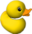

Ducks!
WebGL video recording using
RecordRTC
Record 10-seconds video. It will auto stop after 10 seconds.
Start Recording
Nice job! Your time:
Your rank:
Play again!
WebGL demo is taken from:
statico/webgl-demos
Feedback
Send Message
Enter your email too; if you want "direct" reply!